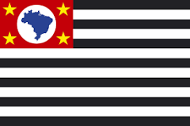
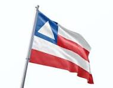
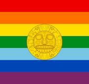

üåéWelcome to South America
South America is known for its rich biodiversity, with the Amazon Rainforest being the largest tropical rainforest and the Amazon River being the largest river by discharge.
The continent is home to diverse cultures and civilizations, including the ancient Inca Empire and a blend of Indigenous, European, and African influences.
South America has dramatic landscapes, from the Andes, the longest continental mountain range, to the Atacama Desert, one of the driest places on Earth.
The continent is rich in natural resources, including minerals, oil, and agricultural products like coffee, soy, and beef.
South America is known for its vibrant festivals, such as Brazil’s Carnival, which is one of the largest and most famous in the world.
The continent faces challenges such as political instability, economic inequality, and deforestation but has a growing number of urban centers and economies.
South America has contributed significantly to global culture, particularly in music, dance, and sports, with figures like Pelé and tango music gaining worldwide recognition.
üåéDay 1: Introduction to South America
South America is a vast and diverse continent, the fourth-largest on Earth. It has a variety of landscapes, including tall mountains, green rainforests, dry deserts, and beautiful beaches.

The Atacama Desert is one of the driest places on Earth. It is located mainly in northern Chile but also stretches into Peru, Bolivia, and Argentina. Despite its dryness, the Atacama is home to unique plants and animals that have adapted to this harsh environment.
The Andes Mountains are the longest mountain range in the world, stretching over 7,000 kilometers (about 4,300 miles) along South America's western edge. These mountains run through seven countries, including Venezuela, Colombia, and Argentina. The Andes are famous for their tall peaks, including Mount Aconcagua, the highest in the Americas, and their rich cultural history, especially with the ancient Inca civilization.
People and Languages
South America is home to over 420 million people, and it is a place where many different cultures live together. The people in South America come from a mix of Indigenous, European, African, and Asian backgrounds. This creates a rich and diverse cultural landscape across the continent. People in South America celebrate their heritage with colorful festivals, traditional music, and delicious foods.
In South America, languages are as diverse as the people who speak them. Spanish is the most widely spoken language, especially in countries like Argentina, Colombia, and Peru. Portuguese is the official language of Brazil, which is the largest country in South America. Besides these, you can also hear Indigenous languages, such as Quechua and Guarani, being spoken in different regions.
While Spanish and Portuguese dominate, South America is also home to many other languages. Indigenous languages like Quechua, Aymara, and Guarani are still spoken by millions of people, preserving ancient traditions and knowledge. In addition, languages brought by immigrants, such as Italian, German, and Arabic, are spoken in certain communities. This linguistic diversity makes South America a truly unique and vibrant region.
Heroes of South America
South America has produced many influential figures. Simón Bolívar, known as "The Liberator," played a key role in gaining independence for several South American countries. Gabriela Mistral, a poet from Chile, was the first Latin American to win the Nobel Prize in Literature, known for her work on love, nature, and social justice.
Geographic Features
South America is home to Brazil, the largest country on the continent, and Suriname, the smallest. The continent also features Aconcagua, the highest peak in Argentina, and the Amazon River, the world's second-longest river, flowing through multiple countries and supporting the largest rainforest on Earth.
South America consists of 12 countries, each with its unique culture and attractions. Here are some key highlights:
Brazil

The Amazon Rainforest in Brazil is the largest rainforest in the world, covering a vast area across South America. It is home to millions of species of plants, animals, and insects, many of which are found nowhere else on Earth.
Rio de Janeiro is one of Brazil's most famous cities, known for its lively culture, beautiful beaches, and landmarks like the Christ the Redeemer statue, which stands tall overlooking the city.
Argentina
The Andes Mountains create a stunning natural border along Argentina's western edge. This range is not only beautiful but also important for its role in South America's climate and biodiversity.
Buenos Aires, the capital of Argentina, is a city full of history, vibrant neighborhoods, and a passion for tango music and dance. It is often called the "Paris of South America" because of its European-style architecture and culture.
Peru

Machu Picchu is an ancient Incan city perched high in the Andes Mountains of Peru. It is one of the most famous archaeological sites in the world, attracting visitors who come to marvel at its well-preserved ruins and breathtaking views.
Lima, the capital city of Peru, is known for its rich cultural heritage, combining colonial architecture with modern city life. It is also a culinary capital, famous for its delicious and diverse food.
üåéDid You Know?
Did you know that the Amazon River is the second-longest river in the world?
Did you know that Brazil is the world's largest coffee producer?
Did you know that the Andes Mountains are the longest mountain range on Earth?
Did you know that Machu Picchu is one of the New Seven Wonders of the World?
Did you know that the Amazon Rainforest produces 20% of the world's oxygen supply?
üåéDay 2: Exploring Brazil
Introduction to Brazil
Brazil is the biggest country in South America. It is a place with beautiful beaches, thick forests, and lively cities. The capital city is Brasília, which was specially designed by a famous architect named Oscar Niemeyer. Brazil is full of surprises, from the exciting Carnival festival to the natural wonder of the Amazon Rainforest. People in Brazil love to celebrate, dance, and enjoy life to the fullest.
Brazil's landscape is diverse. You can find mountains, rivers, forests, and beaches all in one country. The Amazon Rainforest, known as the "lungs of the Earth," covers much of Brazil and is home to countless species of plants and animals. Brazil's culture is as colorful as its landscapes, with influences from Indigenous, African, and European traditions.
The people of Brazil, called Brazilians, are friendly and love to share their culture with visitors. Whether you are exploring the busy streets of São Paulo or relaxing on the beaches of Rio de Janeiro, there is always something exciting to see and do in Brazil.

Carnival is the biggest festival in Brazil. It is famous worldwide for its colorful parades, lively music, and elaborate costumes.
The Amazon Rainforest is a huge forest that covers more than 60% of Brazil. It is filled with amazing wildlife and plants.

The Christ the Redeemer statue in Rio de Janeiro is one of the New Seven Wonders of the World. It stands tall, overlooking the city.
Copacabana Beach is one of the most famous beaches in the world, located in Rio de Janeiro. It is a popular spot for tourists and locals alike.
üåéBig Cities
Brazil has many large and exciting cities. São Paulo is the biggest city in Brazil, and it is known as the business hub of the country. It is a place where many people come to work and live. São Paulo has tall buildings, busy streets, and lots of shops and restaurants.
Rio de Janeiro, often called "Rio," is one of the most famous cities in Brazil. It is known for its beautiful beaches, the Christ the Redeemer statue, and the Carnival festival. The city is full of life, with music, dancing, and sports being a big part of daily life.
Salvador is another important city in Brazil. It is the capital of the state of Bahia and is known for its rich Afro-Brazilian culture. Salvador is a city with deep historical roots, and it has many old buildings, churches, and squares that tell the story of Brazil's past. The city's vibrant culture can be seen in its music, dance, and festivals.
üåéFamous Places
Brazil is a country with many famous landmarks that attract visitors from all over the world. The Amazon Rainforest is one of these famous places. It is the largest rainforest on Earth and is known for its incredible biodiversity. Visitors to the Amazon can explore its winding rivers, dense forests, and meet some of the people who call this place home.
The Christ the Redeemer statue is another iconic landmark in Brazil. Standing on top of the Corcovado mountain in Rio de Janeiro, this massive statue of Jesus Christ has become a symbol of Brazil and is recognized worldwide. Visitors can take a train up the mountain to see the statue up close and enjoy breathtaking views of the city below.
Copacabana Beach in Rio de Janeiro is also world-famous. This sandy beach stretches for kilometers along the Atlantic Ocean and is a favorite spot for locals and tourists to relax, play sports, and enjoy the sun. The beach is lined with hotels, restaurants, and shops, making it a lively and vibrant place to visit.
Culture
Brazilians are known for their love of music, dance, and festivals. The most famous festival in Brazil is Carnival. Carnival is a time of joy and celebration, where people dress in colorful costumes, dance to samba music, and participate in parades that fill the streets with energy and excitement. Carnival is celebrated all over Brazil, but the biggest and most famous celebration takes place in Rio de Janeiro.
Music is a big part of Brazilian culture. Samba is one of the most popular types of music in Brazil, and it is often played during Carnival. Bossa nova is another famous Brazilian music style, known for its smooth and relaxing sounds. Brazilians also enjoy listening to forró, a type of folk music from the northeastern part of the country.
Brazilian food is delicious and full of flavors. Feijoada is a traditional Brazilian dish made with black beans and pork, often served with rice. Churrasco, or Brazilian barbecue, is also very popular, where different types of meat are cooked on a grill and served with various side dishes. Brazilians also enjoy eating fresh fruits, especially tropical ones like mangoes, papayas, and pineapples.
Heroes
Brazil has many heroes who have made a significant impact on the country and the world. Pelé is one of Brazil's most famous heroes. He is considered one of the greatest soccer players of all time and is known for his incredible skill and sportsmanship. Pelé won three World Cups with the Brazilian national team and inspired millions of people around the world with his talent.
Oscar Niemeyer is another important figure in Brazil. He was the architect behind the design of Brasília, the capital of Brazil. Niemeyer was known for his modern and innovative designs, and his work has influenced architecture worldwide. Brasília is a unique city because it was entirely planned and built from scratch, with Niemeyer's vision at its core.
Ayrton Senna is another Brazilian hero. He was a Formula 1 racing driver who won three World Championships. Senna was known for his speed, skill, and determination on the track. He is remembered as one of the greatest racing drivers in history and is a source of pride for Brazilians.
üåéStates, Their Flags, and Capital Cities in Brazil
| State | Flag | Capital City |
|---|---|---|
| São Paulo |  | São Paulo |
| Rio de Janeiro |  |
Rio de Janeiro |
| Bahia |  | Salvador |
| Minas Gerais |  |
Belo Horizonte |
üåéDid You Know?
üíÅü躂Äç‚ôÇÔ∏èDid you know that Brazil is the only country in South America where Portuguese is the official language?
üíÅü躂Äç‚ôÇÔ∏èDid you know that the Amazon Rainforest covers more than 60% of Brazil?
üíÅü躂Äç‚ôÇÔ∏èDid you know that Brazil is the largest producer of coffee in the world?
üíÅü躂Äç‚ôÇÔ∏èDid you know that Rio de Janeiro's Christ the Redeemer statue is one of the New Seven Wonders of the World?
üíÅü躂Äç‚ôÇÔ∏èDid you know that Bras√≠lia, Brazil's capital, was built in just 41 months?
üåéDay 3: Discovering Argentina
Introduction to Argentina
Argentina is a country known for its passion for football, tango music, and stunning landscapes.
The capital city, Buenos Aires, is famous for its European-style architecture and vibrant culture. Argentina is home to the majestic Andes mountains and the breathtaking Iguazu Falls.

Iguazu Falls, located on the border between Argentina and Brazil,
is one of the largest and most impressive waterfalls in the world.
The Andes Mountains run along the western edge of Argentina,
offering stunning views and outdoor adventures.
üåéBig Cities
Buenos Aires is the largest city in Argentina and is known for its bustling streets,
beautiful parks, and rich cultural heritage. The city is famous for its tango music, vibrant nightlife, and historic landmarks.

Buenos Aires is the capital city of Argentina, known for its rich culture,
historic buildings, and lively tango music.
Córdoba is Argentina's second-largest city, known for its colonial architecture,
lively student population, and rich cultural heritage.
Rosario is a major city in Argentina,
famous for being the birthplace of the Argentine flag and its vibrant cultural scene along the Paraná River.
üåéFamous Places
The Perito Moreno Glacier in Patagonia is one of the most famous natural landmarks in Argentina.
It’s one of the few glaciers in the world that is still growing.
Mendoza, located in the heart of Argentina's wine country,
is famous for its Malbec wines and stunning views of the Andes.
Culture
Argentina is known for its passionate love of football (soccer),
with some of the world's best players, like Lionel Messi, hailing from the country. Tango,
a dance and music style that originated in Buenos Aires, is another iconic aspect of Argentine culture.
Argentine cuisine is rich and varied, with asado (barbecue) being a national dish.
Empanadas, pastries filled with meat, cheese, or vegetables, are also very popular.
üåéHeroes
Diego Maradona is one of the greatest football players of all time.
His legendary "Hand of God" goal and exceptional skill made him a national hero in Argentina.

Eva Perón, also known as "Evita," was the First Lady of Argentina
and is remembered for her work in advocating for the poor and fighting for women's rights.
üåéProvinces, Their Flags, and Capital Cities in Argentina
| Province | Flag | Capital City |
|---|---|---|
| Buenos Aires |  |
La Plata |
| Córdoba |  |
Córdoba |
| Santa Fe |  |
Santa Fe |
| Mendoza | Mendoza |
üåéDid You Know?
üíÅü躂Äç‚ôÇÔ∏èDid you know that Argentina is the eighth-largest country in the world by land area?
vüíÅü躂Äç‚ôÇÔ∏èDid you know that the Perito Moreno Glacier is one of the few glaciers in the world that is still growing?
üíÅü躂Äç‚ôÇÔ∏èDid you know that Argentina is one of the world's largest producers of wine?
üêíDid you know that Buenos Aires is known as the "Paris of South America" due to its European-style architecture?
üêíDid you know that tango music and dance originated in the working-class neighborhoods of Buenos Aires?
Now You're Ready to Take the First Quiz!
Head over to the home page to get started with your first quiz! or just click the button below to get started to quiz 1
üåéDay 4: Exploring Peru
Introduction to Peru
Peru is a country rich in history and natural beauty. Located in South America, it is home to ancient ruins, towering mountains, and vast rainforests. The capital city, Lima, is known for its colonial architecture and vibrant cultural scene.

This image captures the essence of Peru's ancient heritage and stunning landscapes.
Big Cities
Peru's major cities include Lima, Arequipa, and Cusco. Lima, the capital, is the largest city and a cultural and economic hub. Arequipa is known as the "White City" because its buildings are made from white volcanic stone. Cusco was the historic capital of the Inca Empire and is a gateway to Machu Picchu.
This image shows the busy streets of Lima, where old colonial buildings mix with modern life.
Ancient Civilizations
Peru is famous for its ancient civilizations, especially the Inca. The most famous site is Machu Picchu, a UNESCO World Heritage Site and one of the New Seven Wonders of the World. Other important archaeological sites include the Nazca Lines and the ruins of Chan Chan.
This image shows Machu Picchu, the ancient Inca city that sits high in the Andes Mountains. It is one of the most famous places in the world.
Culture and Languages
Spanish is the official language of Peru, but many indigenous languages, like Quechua and Aymara, are also spoken. Peru is known for its delicious and diverse food, including dishes like ceviche, lomo saltado, and the traditional Andean dish, cuy. The country is also famous for its colorful festivals, which combine indigenous and Spanish traditions.

This image shows some of Peru's most popular dishes, including ceviche, a dish made from fresh raw fish marinated in lime juice.
üåéHeroes
Peru has many national heroes and cultural icons. José de San Martín was a key figure in the struggle for independence from Spain. Mario Vargas Llosa is a famous author who won a Nobel Prize for his books that explore the life and culture of Peru.

This image shows José de San Martín, one of the leaders who helped Peru gain independence from Spain.
Natural Wonders
Peru is also home to amazing natural wonders. The Amazon Rainforest covers a large part of the country and is full of wildlife. The Andes Mountains run through Peru, with peaks that reach over 20,000 feet high. Lake Titicaca, the highest navigable lake in the world, sits on the border between Peru and Bolivia.
This image shows the lush, green Amazon Rainforest, which is home to countless species of plants and animals.
üåéRegions, Their Flags, and Capital Cities in Peru
| Region | Flag | Capital City |
|---|---|---|
| Lima |  |
Lima |
| Arequipa |  |
Arequipa |
| Cusco |  | Cusco |
| Puno |  |
Puno |
Did You Know?
Did you know that Peru is home to the world's largest flying bird, the Andean Condor?
Did you know that the Amazon River, which flows through Peru, is the second-longest river in the world?
Did you know that the potato was first domesticated in Peru over 7,000 years ago?
Did you know that Peru has more than 3,000 different varieties of potatoes?
Did you know that Lake Titicaca in Peru is the highest navigable lake in the world?
üåéDay 5: Exploring Colombia
Introduction to Colombia
Colombia is a country of stunning contrasts, with a diverse landscape that includes the Andes Mountains, Amazon rainforest, and Caribbean beaches. The capital city, Bogotá, is perched high in the Andes and is known for its rich history and vibrant culture.

This image captures the diverse landscapes of Colombia, from its towering mountains to its lush rainforests and pristine beaches.
Big Cities
Colombia's cities each offer a unique cultural experience. Medellín, known as the "City of Eternal Spring," is famous for its pleasant weather and innovative public transportation system. Cali, the "Salsa Capital of the World," is known for its vibrant music and dance scene.
This image shows Medellín, a city famous for its spring-like weather and modern transportation.
This image shows Cali, known for its lively salsa music and dance culture.
Natural Beauty
Colombia is renowned for its breathtaking natural beauty. The country is the world's second most biodiverse nation, with ecosystems ranging from the Amazon rainforest to the Andes Mountains. Colombia's coffee region, known as the "Eje Cafetero," is famous for its rolling hills and coffee plantations.
This image shows Cocora Valley, home to the tallest palm trees in the world, known as Quindío wax palms.

This image shows the beautiful Tayrona National Park, a coastal reserve with amazing beaches and dense jungle.
This image shows Caño Cristales, often called the "River of Five Colors," considered one of the most beautiful rivers in the world.
üåéPeople and Languages
Colombians are known for their warmth and hospitality. Spanish is the official language, but many indigenous languages are also spoken throughout the country. Colombia's rich cultural heritage is reflected in its music and dance, with genres like salsa, cumbia, and vallenato being popular nationwide.
This image shows salsa dancing in Cali, a city famous for its vibrant salsa culture.
Famous Colombians
Colombia has produced many internationally renowned figures. Shakira, a singer and songwriter known for hits like "Hips Don't Lie," is one of Colombia's most famous celebrities. Gabriel García Márquez, the Nobel Prize-winning author of "One Hundred Years of Solitude," is celebrated for his magical realism and has made a huge impact on world literature.

This image shows Shakira, one of Colombia's most famous singers, known worldwide for her music.

This image shows Gabriel García Márquez, a Nobel Prize-winning author famous for his magical realism stories.
üåéwhat to know?
Colombia is a country full of contrasts. It has towering mountains, vast rainforests, and beautiful beaches.
The capital city, Bogotá, is located high in the Andes Mountains. It has a rich history and is known for its vibrant culture.
Colombia's diverse landscape makes it a special place to visit. You can experience everything from cool mountain air to warm, sunny beaches.
Many people come to Colombia to explore its natural beauty and learn about its unique culture and history.
Colombia's big cities are known for their unique cultures. Medellín is called the "City of Eternal Spring" because of its pleasant weather.
Cali is famous for its lively salsa music and dancing. People from all over the world come to Cali to enjoy its vibrant nightlife.
Each city in Colombia has something special to offer, whether it's the weather, music, or food. There's always something new to discover.
Visiting cities like Medellín and Cali gives you a chance to experience the heart of Colombia's culture.
üåéDepartments, Their Flags, and Capital Cities in Colombia
| Department | Flag | Capital City |
|---|---|---|
| Antioquia |  |
Medellín |
| Valle del Cauca | Cali | |
| Atlántico |  |
Barranquilla |
| Cundinamarca |  |
Bogotá |
üåéTake A ways
Colombia is a vibrant and diverse country, offering something for every traveler. Whether you're interested in exploring bustling cities, hiking through lush rainforests, or relaxing on pristine beaches, Colombia has it all.
Are you ready to explore Colombia? Start planning your trip today and discover all that this beautiful country has to offer!
Did You Know?
Did you know that Colombia is the only country in South America with coastlines on both the Pacific Ocean and the Caribbean Sea?
Did you know that Colombia is the leading producer of emeralds in the world?
Did you know that the Amazon River starts in Colombia before flowing into Brazil?
Did you know that the Andes Mountains run through Colombia, making it one of the few countries with three different mountain ranges?
Did you know that Colombia is home to more than 1,800 species of birds, making it a birdwatcher's paradise?
üåéDay 6: Exploring Chile
Introduction to Chile
Chile is a long and narrow country that stretches along the western edge of South America. It is known for its diverse landscapes, including deserts, mountains, and a stunning coastline. The capital city is Santiago, a bustling metropolis with a mix of modern and historical sites.

This image showcases Chile's breathtaking natural scenery, from the towering Andes to the expansive coastlines.
Chile’s landscape is one of the most varied in the world. You can find everything from arid deserts to lush forests within its borders.
Because of its unique shape, Chile has a coastline that stretches for thousands of miles, making it a paradise for those who love the ocean.
Many visitors are drawn to Chile not just for its natural beauty, but also for the rich culture and history that can be found in cities like Santiago.
Big Cities
Besides Santiago, Chile is home to other major cities like Valparaíso, known for its colorful houses and vibrant arts scene, and Concepción, an important cultural and educational center. Each city in Chile offers a unique experience, blending history with modern living.
This image shows the colorful houses of Valparaíso, a city famous for its steep hills and vibrant street art.
Valparaíso is often called the "Jewel of the Pacific" because of its stunning views of the ocean and unique architecture.
Walking through the streets of Valparaíso feels like stepping into an open-air museum, with murals and street art decorating nearly every corner.
Visitors love to explore the city's winding streets and discover hidden cafes, shops, and galleries.

This image shows Concepción, a city that is a hub for culture and education in Chile.
Concepción is known for its universities and vibrant student life, making it an important center for learning in the country.
The city has a rich cultural scene, with many theaters, museums, and music venues where you can experience Chilean culture firsthand.
Concepción also played a key role in Chile's history and independence, making it a city with both cultural and historical significance.
üåéNatural Beauty
Chile is renowned for its stunning natural landscapes. The Atacama Desert in the north is one of the driest places on Earth, offering a surreal, otherworldly landscape. The Andes Mountains run along the eastern border, providing a dramatic backdrop to the country. On Easter Island, you can find the mysterious Moai statues, which have puzzled and fascinated visitors for centuries.
This image captures the vast, barren beauty of the Atacama Desert, the driest desert in the world.
The Atacama Desert is known for its unique landscapes, including salt flats, hot springs, and geysers.
Despite its dryness, the desert is home to a surprising variety of life, including flamingos and other wildlife that thrive in this harsh environment.
Many people visit the Atacama Desert to experience its otherworldly landscapes and to stargaze, as it is one of the best places on Earth to see the night sky.
This image shows the majestic Andes Mountains, which run the length of Chile's eastern border.
The Andes are the longest mountain range in the world, and they create stunning landscapes throughout Chile.
The mountains are home to a wide range of wildlife and are a popular destination for outdoor activities like hiking and skiing.
In Chile, the Andes Mountains are not just a natural wonder but also a vital part of the country's culture and history.
This image shows the mysterious Moai statues on Easter Island, a remote island in the Pacific Ocean that is part of Chile.
The Moai statues were carved by the Rapa Nui people between the 13th and 16th centuries, and they are still shrouded in mystery.
Easter Island is one of the most remote inhabited places in the world, and its unique culture and history attract visitors from all over.
People are fascinated by the Moai statues, which stand as silent sentinels on the island, watching over the land and sea.
üåéPeople and Languages
The people of Chile primarily speak Spanish. Chileans are known for their warm hospitality and love of good food, music, and festivals. Traditional music includes the cueca, and popular dishes include empanadas and asado, a type of barbecue.

This image shows Chileans dancing the cueca, the national dance of Chile, which is often performed during festivals.
The cueca is a lively and spirited dance that represents the flirtatious courtship between a rooster and a hen.
During national celebrations, such as Fiestas Patrias, you will see people all over Chile dancing the cueca and enjoying traditional music.
Chilean culture is rich and diverse, with influences from indigenous peoples, Spanish settlers, and other immigrant communities.
Famous Chileans
Chile has produced many notable figures, including Pablo Neruda, a Nobel Prize-winning poet whose works have been celebrated worldwide. Another prominent figure is Michelle Bachelet, who served as Chile's president and was the first woman to hold that office in the country.

This image shows Pablo Neruda, one of Chile's most famous poets, who won the Nobel Prize for Literature in 1971.
Neruda's poetry is known for its powerful emotions and beautiful imagery, often reflecting his love for Chile and its people.
His works have been translated into many languages, making him one of the most widely read poets in the world.
Neruda's legacy continues to inspire poets, writers, and readers around the globe.

This image shows Michelle Bachelet, the first woman to serve as president of Chile. She held the office twice, from 2006 to 2010 and from 2014 to 2018.
Bachelet is known for her work on social issues, including healthcare reform and women's rights.
Before becoming president, she was a pediatrician and public health expert, and she also served as the head of UN Women, a United Nations organization dedicated to gender equality.
Michelle Bachelet remains an influential figure in Chilean and global politics, advocating for human rights and social justice.
üåéRegions, Their Flags, and Capital Cities in Chile
| Region | Flag | Capital City |
|---|---|---|
| Antofagasta |  |
Antofagasta |
| Valparaíso |  |
Valparaíso |
| Biobío |  |
Concepción |
| Metropolitan Region |  |
Santiago |
Did You Know?
üíÅü躂Äç‚ôÇÔ∏èDid you know that Chile is the longest north-south trending country in the world, stretching over 4,300 kilometers?
üíÅü躂Äç‚ôÇÔ∏èDid you know that the Atacama Desert in Chile is the driest non-polar desert on Earth?
üíÅü躂Äç‚ôÇÔ∏èDid you know that Chile is home to over 2,000 volcanoes, many of which are still active?
üêíDid you know that Easter Island, known for its Moai statues, is one of the most remote inhabited islands in the world?
üêíDid you know that Chile's wine country is famous for its high-quality wines, particularly the Carmenere variety?
Now You're Ready to Take the Quiz!
Head over to the home page to get started with your Second quiz! or just this button below to get started to quiz 2
üåéday 7 : Introduction to Venezuela
Venezuela is a beautiful country located in the northern part of South America. It is known for its diverse landscapes that include towering mountains, serene beaches, and expansive plains. The capital city, Caracas, is a bustling metropolis nestled in a valley surrounded by mountains.

This image captures the stunning diversity of Venezuela's landscapes. From the majestic Andes Mountains that provide breathtaking views to the serene beaches along the Caribbean coast, Venezuela is a land of contrasts. Caracas, the capital, is a vibrant city that reflects the country's rich cultural heritage and modern energy. The city's location, surrounded by mountains, makes it a unique blend of urban life and natural beauty. Whether exploring the bustling streets of Caracas or venturing into the countryside, Venezuela offers a wealth of experiences for visitors.
Big Cities
Venezuela's cities are full of life and culture. Maracaibo, located near the western coast, is famous for its rich history and warm weather. Valencia, known for its beautiful lakes and parks, is another major city that offers a unique blend of modernity and tradition.
Maracaibo

Lake Maracaibo is one of the largest lakes in South America and is renowned for its frequent lightning storms. Known as the "Catatumbo Lightning," these storms create a mesmerizing natural light show that can be seen from miles away. Maracaibo itself is a bustling city with a rich cultural heritage. The city's history is reflected in its colonial architecture and vibrant local traditions. Visitors to Maracaibo can explore historical landmarks, enjoy the local cuisine, and experience the warmth and hospitality of the Maracuchos, as the locals are known.

Maracaibo is a vibrant city known for its cultural heritage and historical architecture. The city’s streets are lined with colonial-era buildings that tell the story of its rich past. Maracaibo is also an economic hub, with its bustling markets and thriving industries. The city's cultural scene is alive with music, dance, and festivals that celebrate the diverse traditions of the region. Whether it's the lively celebrations of Gaita music or the quiet beauty of the city’s parks, Maracaibo offers something for everyone.
Valencia

Valencia is home to beautiful parks and natural reserves that offer a peaceful retreat from city life. These green spaces are perfect for picnics, walks, and enjoying the natural beauty of the region. Valencia is known for its well-preserved historic sites and its vibrant cultural scene. The city's parks are not only places of relaxation but also venues for cultural events and community gatherings, reflecting the close-knit and welcoming nature of its residents.

Valencia is a modern city with a rich history and is a key economic hub in Venezuela. The city's growth is reflected in its modern infrastructure, bustling markets, and vibrant economy. Valencia's historical landmarks, such as its old churches and plazas, provide a glimpse into the city's past, while its contemporary art galleries, museums, and theaters highlight its dynamic cultural life. Whether you're interested in history, culture, or business, Valencia has much to offer.
People and Languages
Venezuelans are known for their warmth and hospitality. The official language is Spanish, but many indigenous languages are also spoken throughout the country. Music and dance are integral parts of Venezuelan culture, with genres like joropo and salsa being particularly popular.
Joropo is a traditional Venezuelan dance and music genre, deeply rooted in the country's cultural heritage. The lively dance is often performed at festivals and celebrations across the country. The music is characterized by the use of instruments like the harp, cuatro, and maracas. Joropo reflects the spirit of the Venezuelan people – joyful, passionate, and deeply connected to their roots. Watching a Joropo performance is a vibrant display of Venezuela’s cultural richness.
üåéFamous Venezuelans
Venezuela has produced many famous figures who have left a mark on the world. Simón Bolívar, known as "El Libertador," played a crucial role in the independence movements of several South American countries. Gustavo Dudamel is a world-renowned conductor who has brought classical music to new audiences globally.
Simón Bolívar, often referred to as "El Libertador," was a revolutionary leader who played a pivotal role in the independence of several South American countries, including Venezuela. His vision of a united Latin America and his relentless efforts in the fight for freedom have made him a national hero and a symbol of liberation. Bolívar’s legacy is celebrated throughout Venezuela, with numerous monuments, statues, and public squares dedicated to his memory.
Gustavo Dudamel is a world-renowned conductor and one of Venezuela’s most celebrated musicians. Known for his dynamic conducting style and passion for classical music, Dudamel has inspired audiences around the world. He is also a product of Venezuela’s "El Sistema" music education program, which has provided musical training and opportunities to thousands of young people across the country. Through his work, Dudamel continues to bring the beauty of classical music to new audiences, making him a cultural ambassador for Venezuela.
Venezuela, located on the northern coast of South America, is a country rich in natural resources, particularly oil. It boasts some of the largest proven oil reserves in the world, which has historically made it one of the wealthiest countries in the region. However, the heavy dependence on oil has also made its economy vulnerable to fluctuations in global oil prices. Despite its potential, Venezuela has faced severe economic challenges in recent years, leading to a drastic decline in living standards, hyperinflation, and a significant humanitarian crisis.
The political landscape in Venezuela has been highly turbulent, especially in the 21st century. Hugo Chávez, who was elected president in 1998, ushered in the Bolivarian Revolution, a socialist and populist movement aimed at redistributing wealth and reducing inequality. Chávez's government implemented widespread social programs funded by oil revenues, which initially reduced poverty and gained him substantial support. However, his policies also centralized power and weakened democratic institutions.
After Chávez's death in 2013, Nicolás Maduro assumed the presidency, continuing Chávez's policies but facing increasing opposition, both domestically and internationally, due to perceived authoritarian practices and mishandling of the economy.
Venezuela's economic situation has deteriorated significantly under Maduro's leadership. Hyperinflation, one of the highest in the world, has eroded the value of the national currency, making basic goods unaffordable for many citizens. The country has also faced shortages of food, medicine, and other essential goods.
Millions of Venezuelans have fled the country in search of better living conditions, leading to one of the largest migratory crises in the region. This exodus has put a strain on neighboring countries and created a complex humanitarian situation.
Venezuela's rich cultural heritage is a blend of indigenous, African, and Spanish influences. Its music, dance, and art reflect this diverse history. Traditional forms like joropo, a lively folk dance, are celebrated alongside modern styles influenced by global trends.
The country is also known for its natural beauty, from the Andes Mountains in the west to the Amazon rainforest in the south. One of its most famous landmarks is Angel Falls, the world’s highest uninterrupted waterfall. These natural attractions have made Venezuela a popular destination for eco-tourism.
Venezuela's social landscape is deeply divided. While the government claims to champion the rights of the poor, critics argue that its policies have led to widespread poverty and the erosion of middle-class wealth. Social unrest has been common, with frequent protests against government policies and economic conditions.
Internationally, Venezuela's relations with other countries have been strained, particularly with the United States. The U.S. has imposed sanctions on Venezuelan officials and the oil sector, aiming to pressure the government to restore democratic governance. Meanwhile, Venezuela has sought alliances with other nations like Russia and China, further complicating its geopolitical position.
Despite these challenges, Venezuela's people remain resilient. Efforts by civil society organizations, both inside and outside the country, continue to push for democratic reforms and humanitarian aid. The future of Venezuela remains uncertain, but the determination of its people offers hope for eventual recovery.
In the area of sports, Venezuela has produced several world-class athletes, particularly in baseball, which is the country's most popular sport. Major League Baseball (MLB) in the United States features many Venezuelan players who have achieved significant success.
The Venezuelan education system, once a model in Latin America, has suffered due to the ongoing economic crisis. Schools and universities face shortages of resources, leading to declining educational outcomes. Many teachers have left the country, exacerbating the challenges in the education sector.
Health care in Venezuela has also been severely impacted. Hospitals are often without basic supplies, and many health professionals have emigrated. This has led to a public health crisis, with rising rates of preventable diseases and declining overall health indicators.
Venezuela's political future is a subject of intense debate. The opposition has called for free and fair elections, while the government has maintained control through various means, including the suppression of dissent and control over state institutions. The role of the military remains crucial in the balance of power.
Despite the challenges, there are signs of resilience and hope. Grassroots movements and international pressure could eventually lead to meaningful change. The resilience of Venezuelans, both at home and abroad, is a testament to their enduring spirit in the face of adversity.
üåéStates, Their Flags, and Capital Cities in Venezuela
| State | Flag | Capital City |
|---|---|---|
| Zulia | Maracaibo | |
| Carabobo | Valencia | |
| Miranda |  |
Los Teques |
| Bolívar |  |
Ciudad Bolívar |
ü§îThink!!
Venezuela is a country of incredible natural beauty, rich cultural heritage, and warm, welcoming people. Whether you're exploring its vibrant cities, marveling at its natural wonders, or enjoying its lively music and dance, Venezuela offers an unforgettable experience.
Are you ready to discover the wonders of Venezuela? Start planning your adventure today and experience the magic of this incredible country!
Did You Know?
Did you know that Angel Falls in Venezuela is the world's tallest waterfall, with a height of over 3,200 feet?
Did you know that Venezuela has one of the largest oil reserves in the world?
Did you know that Venezuela is home to over 25,000 plant species, many of which are unique to the country?
Did you know that the Orinoco River is one of the longest rivers in South America, stretching over 1,700 miles?
Did you know that Venezuela's Margarita Island is known as the "Pearl of the Caribbean" because of its stunning beaches?
üåéDay 8: Exploring Bolivia
Look at this big, shiny place! This is called the Uyuni Salt Flats in Bolivia. It's like a giant mirror!
Welcome to Bolivia!
Bolivia is a country with very tall mountains and lots of stories from long, long ago. Bolivia has two important cities: one is Sucre, and the other is La Paz.
üåéBig Cities
Bolivia has other big cities too! Santa Cruz is a very busy place, and Cochabamba is where you can find lots of yummy food!
Beautiful Places
In Bolivia, you can see the giant Andes Mountains, the shiny Uyuni Salt Flats, and a big blue lake called Lake Titicaca. So much to explore!
People and Words
The people in Bolivia are very nice, and they speak different languages like Spanish, Quechua, and Aymara. They love to have fun with bright costumes and music during festivals!
Famous People
Some people from Bolivia are very well-known! Evo Morales was a president, and Jaime Escalante was a super teacher who helped kids learn a lot!
La Paz

La Paz is a city in the mountains! It looks like it's sitting inside a big, cozy bowl made of hills.
See the buildings? La Paz is surrounded by huge mountains. It’s a city up high in the sky!
Cochabamba

Cochabamba is like a big garden! It's full of green plants and flowers everywhere.
People in Cochabamba enjoy sunny weather and lots of yummy food. It’s a happy place to be!
üåéDepartments, Their Flags, and Capital Cities in Bolivia
| Department | Flag | Capital City |
|---|---|---|
| La Paz | La Paz | |
| Cochabamba |  |
Cochabamba |
| Santa Cruz | Santa Cruz | |
| Potosí |  |
Potosí |
Bolivia's Two Important Cities
Bolivia has two special cities that are like its homes. One city is called Sucre. It’s where important papers are kept. The other city is La Paz. It’s where the president works and helps take care of the country.

This picture shows Sucre and La Paz, the two important cities in Bolivia.
The Big, Shiny Salt Flats
Bolivia has a huge, shiny place called the Uyuni Salt Flats. It’s the biggest salt flat in the whole world! It’s so big that it looks like it goes on forever, like a giant white mirror.
Look at this shiny place! It's the Uyuni Salt Flats, and it's made of lots and lots of salt.
Fun Facts About Bolivia
Did you know that Bolivia has 36 different languages? That’s a lot of ways to talk! People speak Spanish and many other languages that have been spoken for a very long time.
There’s also a big, high lake called Lake Titicaca. It’s so high up in the mountains that boats can float on it even though it’s way up in the sky!
In La Paz, there’s a special market called the Witches' Market. You can find all sorts of interesting things there, like dried llama babies, which people use in special ceremonies.

This picture shows Lake Titicaca, the high lake.!
Did you know?
Bolivia has two capital cities: Sucre is the constitutional capital, while La Paz is the seat of government.
The Uyuni Salt Flats are the largest salt flats in the world, spanning over 10,000 square kilometers.
Bolivia is home to 36 official languages, including Spanish and various indigenous languages.
Lake Titicaca, which Bolivia shares with Peru, is the highest navigable lake in the world.
The Witches' Market in La Paz offers unique cultural items like dried llama fetuses, which are used in traditional Aymara rituals.
üåéSummary of Our South American Adventure
This image shows the busy streets of Lima, where old colonial buildings mix with modern life.
These pictures shows the amazing places we have visited in South America.
This is South America!
South America is a big continent with many different places to explore. There are high mountains, deep jungles, and beautiful beaches. The people here speak different languages and have many fun traditions.
Brazil
Brazil is a huge country with the Amazon Rainforest, where many animals live. We also saw the big city of Rio de Janeiro, with its famous Carnival and the giant statue of Christ the Redeemer.
The Amazon is full of trees and rivers, and it's one of the most exciting places on Earth!
Argentina
In Argentina, we saw beautiful waterfalls at Iguazu and snowy mountains in Patagonia. Buenos Aires, the capital, is full of music and dance called tango.
Argentina has lots of cool places to visit, from icy peaks to sunny cities.
Peru
Peru is famous for Machu Picchu, an old city built by the Incas. We also learned about llamas, which are animals that live in the mountains.
Machu Picchu is a magical place high up in the mountains where people lived a long, long time ago.
Chile
Chile is a long, skinny country with deserts, forests, and the big city of Santiago. We also heard about Easter Island, where giant stone faces called moai stand.
Chile has so many different places to see, from the driest desert to mysterious islands.
Bolivia
Bolivia has high mountains and the Uyuni Salt Flats, which look like a giant mirror. We also saw Lake Titicaca, a big lake high in the mountains.
The salt flats in Bolivia are so flat and shiny that it looks like you’re walking on the sky!
Colombia
Colombia is known for its coffee and the colorful city of Bogotá. The country has beautiful beaches and tall mountains too.
Colombia is full of bright colors and friendly people who love music and dance.
Venezuela
Venezuela is where we saw the tallest waterfall in the world, Angel Falls. The country also has a big city called Caracas and lots of oil.
Angel Falls is so tall that the water turns into mist before it hits the ground!
Ecuador
Ecuador is famous for the Galápagos Islands, where you can see animals that live nowhere else. The capital, Quito, is high in the mountains near the equator.

The Galápagos Islands are a magical place full of animals like giant turtles and playful sea lions.
Argentina
The Andes Mountains form a stunning natural border along Argentina's western edge.


Medellín and Cali are two of Colombia's most iconic cities, each with its own unique charm and attractions.
| State | Flag | Capital City |
|---|---|---|
| Zulia | Maracaibo | |
| Potosí | |
Potosí |
| Miranda | |
Los Teques |
| Antofagasta | |
Antofagasta |
| Valle del Cauca |  |
Cali |
Did you know?
The Amazon River in South America is so long and wide that it carries more water than any other river on Earth.
The Andes Mountains are the longest mountain range in the world and stretch all the way along South America's west coast.
In the Galápagos Islands, animals like giant tortoises and marine iguanas live, and you can't find them anywhere else in the world!
Patagonia, at the southern tip of South America, is a land of glaciers, penguins, and incredible natural beauty.
The Uyuni Salt Flats in Bolivia are so flat that they are often used to test space equipment like rovers.
Now You're Ready to Take the Quiz!
Head over to the home page to get started with your Third quiz as well as General Test and Exam!